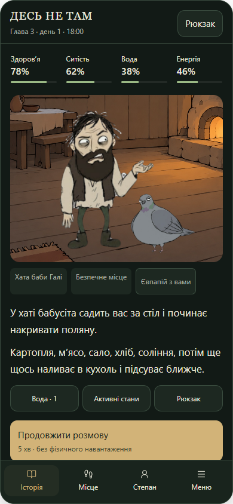
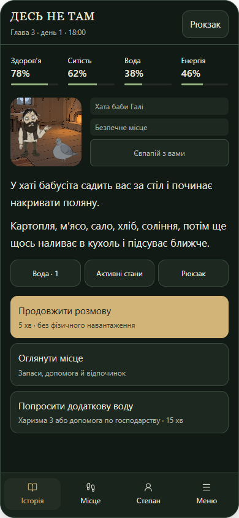
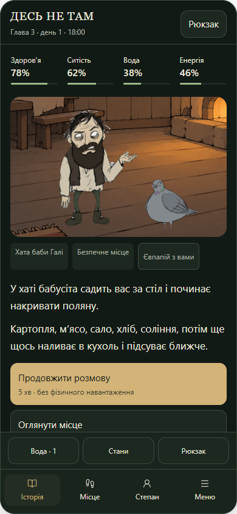

Історія попереду

Три варіанти для погодження. Це макети: використовують наявні ілюстрації та уривок третьої глави. Фінальне компонування ще не застосовано в грі. Кожен екран нижче — знімок 390×844; також є перевірені знімки 320×568 і 430×932. Довгі розділи мають прокручуваний вміст і постійну нижню навігацію.


